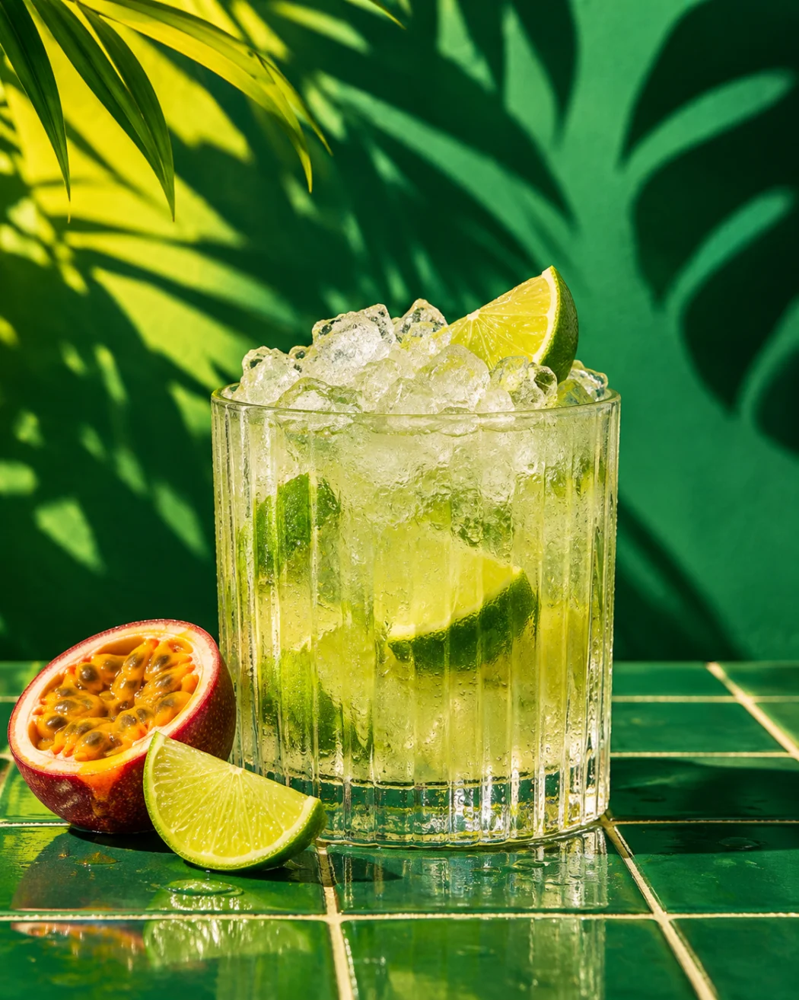
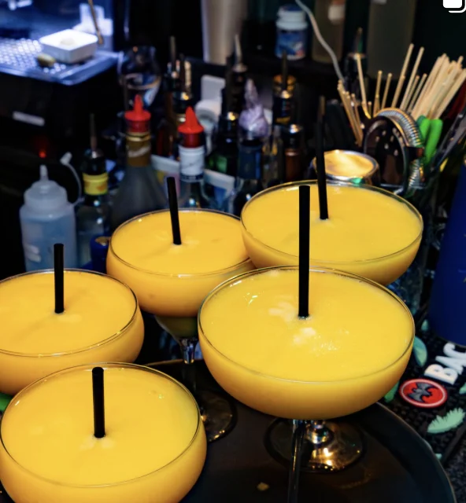

★★★★★CUCINA
«Deliziosi burritos, ancora più ceviche»
Nico AgustoniCoRestaurant ↗

FIG. 01 / DAL BANCONEOSTERIA LATINA · TESSERETE
Cocktail tropicali, verde neon e una tavola che mette insieme Brasile, Argentina, Perù e Messico.
Esplora il bancone01 / INTERAZIONE · AL BANCONE
Dal primo cocktail al brindisi. Tocca i tre momenti e passa dalle immagini del profilo alla scena illustrata.
I cocktail gialli serviti al bancone di Papilla.

DALLE VOSTRE TAVOLE
«Deliziosi burritos, ancora più ceviche»
«Terrific food and excellent service»
«Una serata così fantastica. Il cibo era incredibile.»
Estratti selezionati da recensioni pubbliche. Le schede linkano alle rispettive fonti.